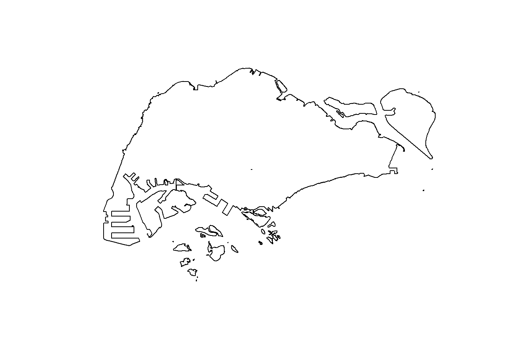
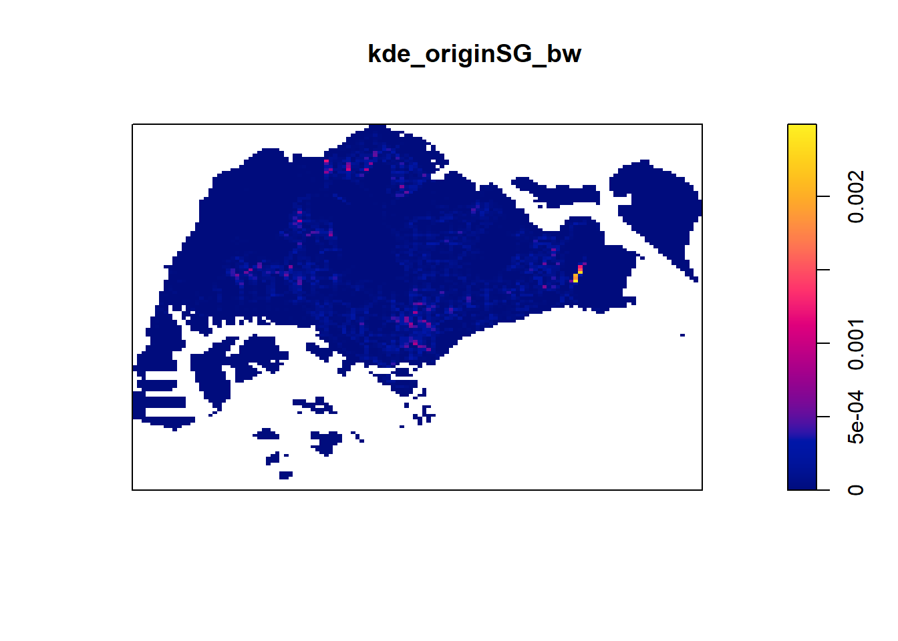
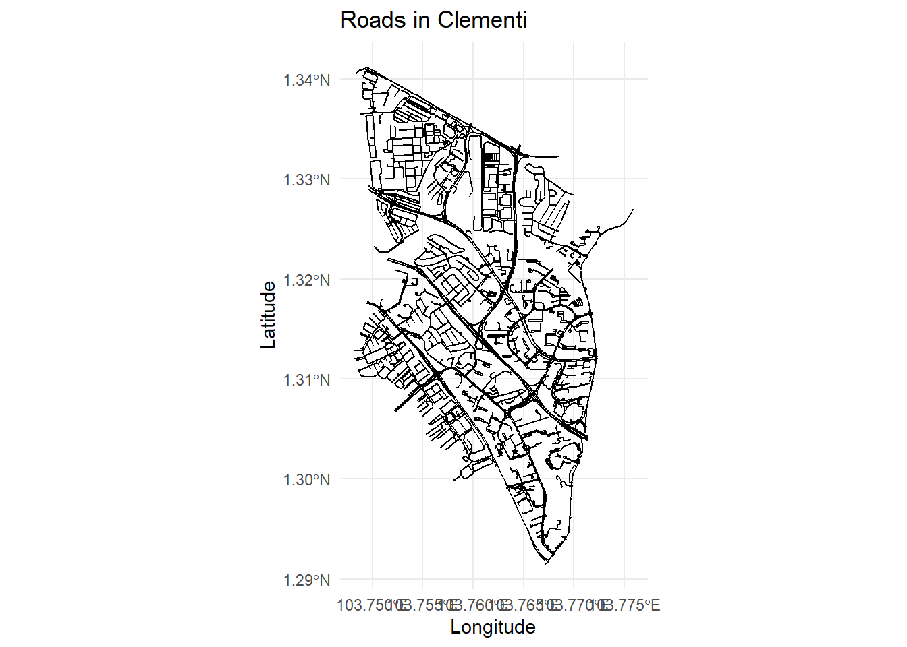
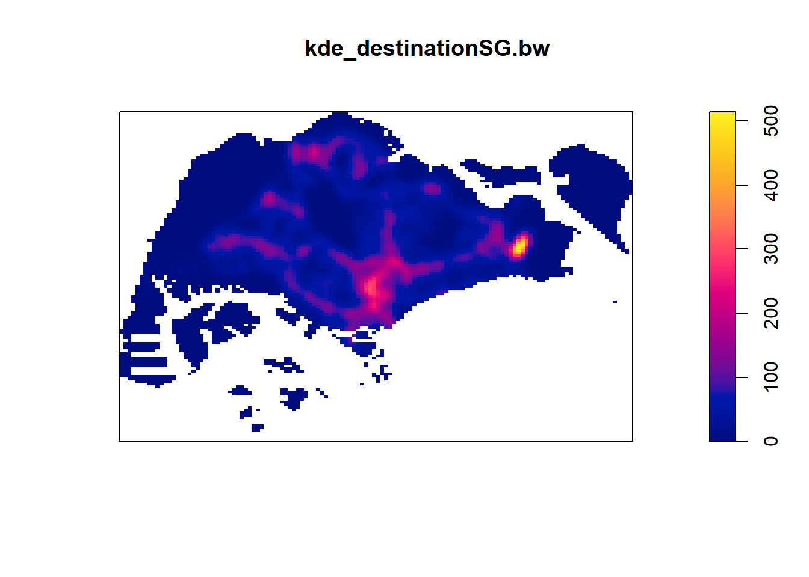

pacman::p_load(maptools, sf, raster, spatstat, tmap, tidyverse, arrow)Application of Spatial Point Patterns Analysis to discover the geographical distribution of Grab hailing services in Singapore
Take-home_Ex01
Setting the Scene
Human mobility, the movement of human beings in space and time, reflects the spatial-temporal characteristics of human behavior. With the advancement of Information and Communication Technologies (ICT) especially smart phone, a large volume of data related to human mobility have been collected. By using appropriate GIS analysis methods, these data are potentially useful in supporting smart city planning and management.
In Singapore, one of the important source of data related to human mobility is from Land Transport Authority (LTA) DataMall. Two data sets related to human mobility are provided by the portal, they are: Passenger Volume by Origin Destination Train Stations and Passenger Volume by Origin Destination Bus Stops. One of the limitation of these data sets is that their location are biased to either bus stops or MRT/LRT stations. In 2020, another very interesting human mobility data set called Grab Posisi was released by GRAB, one of the largest shared taxi operator in South-east Asia. There are two data sets been released and one of them is for Singapore.
Objectives
Geospatial analytics hold tremendous potential to address complex problems facing society. In this study, you are tasked to apply appropriate spatial point patterns analysis methods to discover the geographical and spatio-temporal distribution of Grab hailing services locations in Singapore.
The Task
Using appropriate function of sf and tidyverse, preparing the following geospatial data layer in sf tibble data.frames:
Grab taxi location points either by origins or destinations.
Road layer within Singapore excluding outer islands.
Singapore boundary layer excluding outer islands.
Using the extracted data, derive traditional Kernel Density Estimation layers
Using the extracted data, derive either Network Kernel Density Estimation (NKDE) or Temporal Network Kernel Density Estimation (TNKD)
Using appropriate tmap function, display the kernel density layers on OpenStreetMap of Singapore
Describe the spatial patterns revealed by the kernel density maps.
The Data
Aspatial data
For the purpose of this assignment, Grab-Posisi of Singapore will be used
Geospatial data
Road data set from OpenStreetMap of Geofabrik download server. The Malaysia, Singapore, and Brunei coverage should be downloaded.
Master Plan 2019 Subzone Boundary (No Sea) from Data.gov.sg
Installing and Loading the R packages
Spatial Data Wrangling
Importing Grab-Posisi Dataset
Since the dataset is stored as .parquet file format, we need to use the arrow package
grab_data <- arrow::open_dataset("../../data/aspatial/GrabPosisi") %>%
collect()Let’s convert the pingtimestamp column from integer to a datetime format
grab_data$pingtimestamp <- as_datetime(grab_data$pingtimestamp)Extracting trip starting locations
origin_df <- grab_data %>%
group_by(trj_id) %>%
arrange(pingtimestamp) %>% # from dplyr package
filter(row_number()==1) %>%
mutate(weekday = wday(pingtimestamp, # functions from lubridate package
label=TRUE,
abbr=TRUE),
start_hr = factor(hour(pingtimestamp)), # With factor(), it makes it ordinal
day = factor(mday(pingtimestamp)))
view(origin_df)Extracting trip destination locations
destination_df <- grab_data %>%
group_by(trj_id) %>%
arrange(desc(pingtimestamp)) %>% # from dplyr package
filter(row_number()==1) %>%
mutate(weekday = wday(pingtimestamp, # functions from lubridate package
label=TRUE,
abbr=TRUE),
end_hr = factor(hour(pingtimestamp)), # With factor(), it makes it ordinal
day = factor(mday(pingtimestamp)))
view(destination_df)Converting into sf tibble dataframe
Let’s convert it into a sf tibble dataframe. According to the data source, our data is in Geodetic CRS: WGS84, so we need to convert it to SVY21 too.
origin_sf <- st_as_sf(origin_df, coords = c("rawlng", "rawlat"), crs = 4326) %>%
st_transform(crs=3414)
destination_sf <- st_as_sf(destination_df, coords = c("rawlng", "rawlat"), crs = 4326) %>%
st_transform(crs=3414)st_geometry(origin_sf)
st_geometry(destination_sf)write_rds(origin_sf,"../../data/rds/Take-home_Ex01/origin_sf.rds")
write_rds(destination_sf,"../../data/rds/Take-home_Ex01/destination_sf.rds")origin_sf <- read_rds("../../data/rds/Take-home_Ex01/origin_sf.rds")
destination_sf <- read_rds("../../data/rds/Take-home_Ex01/destination_sf.rds")Importing the Geospatial data
Importing the Boundary of Singapore
mpsz_sf <- st_read(dsn ="../../data/geospatial/MP14_SUBZONE_WEB_PL", layer = "MP14_SUBZONE_WEB_PL") %>%
st_transform(crs = 3414)Reading layer `MP14_SUBZONE_WEB_PL' from data source
`C:\russelltjh\IS415-GAA\data\geospatial\MP14_SUBZONE_WEB_PL'
using driver `ESRI Shapefile'
Simple feature collection with 323 features and 15 fields
Geometry type: MULTIPOLYGON
Dimension: XY
Bounding box: xmin: 2667.538 ymin: 15748.72 xmax: 56396.44 ymax: 50256.33
Projected CRS: SVY21sg_sf <- st_union(mpsz_sf)
plot(sg_sf)
st_geometry(sg_sf)Geometry set for 1 feature
Geometry type: MULTIPOLYGON
Dimension: XY
Bounding box: xmin: 2667.538 ymin: 15748.72 xmax: 56396.44 ymax: 50256.33
Projected CRS: SVY21 / Singapore TMExtracting Study Areas from Singapore Boundary
bedok <- mpsz_sf %>%
filter(PLN_AREA_N == "BEDOK")
tamp <- mpsz_sf %>%
filter(PLN_AREA_N == "TAMPINES")
clementi <- mpsz_sf %>%
filter(PLN_AREA_N == "CLEMENTI")
jurongwest <- mpsz_sf %>%
filter(PLN_AREA_N == "JURONG WEST")Importing Road data from OpenStreetMap
We have the ESRI files downloaded, so let’s check what layers we can choose from this dataset.
file_path = "../../data/geospatial/malaysia-singapore-brunei.shp"
layers <- st_layers(file_path)
print(layers)Driver: ESRI Shapefile
Available layers:
layer_name geometry_type features fields crs_name
1 gis_osm_buildings_a_free_1 Polygon 1275019 5 WGS 84
2 gis_osm_landuse_a_free_1 Polygon 61509 4 WGS 84
3 gis_osm_natural_a_free_1 Polygon 665 4 WGS 84
4 gis_osm_natural_free_1 Point 45725 4 WGS 84
5 gis_osm_places_a_free_1 Polygon 1081 5 WGS 84
6 gis_osm_places_free_1 Point 6920 5 WGS 84
7 gis_osm_pofw_a_free_1 Polygon 5992 4 WGS 84
8 gis_osm_pofw_free_1 Point 2369 4 WGS 84
9 gis_osm_pois_a_free_1 Polygon 54173 4 WGS 84
10 gis_osm_pois_free_1 Point 80301 4 WGS 84
11 gis_osm_railways_free_1 Line String 5252 7 WGS 84
12 gis_osm_roads_free_1 Line String 1766163 10 WGS 84
13 gis_osm_traffic_a_free_1 Polygon 17502 4 WGS 84
14 gis_osm_traffic_free_1 Point 74074 4 WGS 84
15 gis_osm_transport_a_free_1 Polygon 1320 4 WGS 84
16 gis_osm_transport_free_1 Point 16991 4 WGS 84
17 gis_osm_waterways_free_1 Line String 34559 5 WGS 84
18 gis_osm_water_a_free_1 Polygon 19682 4 WGS 84We only want the data for roads, so let’s pick the gis_osm_roads_free_1 layer.
MySgBr_Roads <- st_read(dsn ="../../data/geospatial/malaysia-singapore-brunei.shp", layer = "gis_osm_roads_free_1")We notice that the MySgBr_Roads data is in Geodetic CRS: WGS 84 format, let’s convert it to SVY21.
MySgBr_Roads_SVY21 <- st_transform(MySgBr_Roads, crs = 3414)Now that the data is in SVY21 format, let’s extract only the roads in Singapore using the Singapore boundary data.
indices <- st_intersects(sg_sf, MySgBr_Roads_SVY21)
sg_roads <- MySgBr_Roads_SVY21[unlist(indices), ]write_rds(sg_roads, "../../data/rds/Take-home_Ex01/sg_roads.rds")sg_roads <- read_rds("../../data/rds/Take-home_Ex01/sg_roads.rds")ggplot(data = sg_roads) +
geom_sf() +
theme_minimal() +
labs(title = "Roads in Singapore",
x = "Longitude",
y = "Latitude")# Set tmap mode to view for interactive maps
tmap_mode("view")
# Create interactive map
tm <- tm_shape(sg_roads) +
tm_lines(col = "blue") +
tm_basemap(server = "OpenStreetMap") +
tm_layout(title = "Interactive Map of Roads in Singapore")
# Render the map
tmGeospatial Data Wrangling
Creating ppp object
spatstat requires the analytical data in ppp object form. Let’s convert our grab_sf into a ppp object.
origin_ppp <- as.ppp(origin_sf)
destination_ppp <- as.ppp(destination_sf)Now, we will display the properties of our new ppp object.
summary(origin_ppp)Marked planar point pattern: 28000 points
Average intensity 2.473666e-05 points per square unit
Coordinates are given to 3 decimal places
i.e. rounded to the nearest multiple of 0.001 units
marks are of type 'character'
Summary:
Length Class Mode
28000 character character
Window: rectangle = [3628.24, 49845.23] x [25198.14, 49689.64] units
(46220 x 24490 units)
Window area = 1131920000 square unitssummary(destination_ppp)Marked planar point pattern: 28000 points
Average intensity 2.493661e-05 points per square unit
Coordinates are given to 3 decimal places
i.e. rounded to the nearest multiple of 0.001 units
marks are of type 'character'
Summary:
Length Class Mode
28000 character character
Window: rectangle = [3637.21, 49870.63] x [25221.3, 49507.79] units
(46230 x 24290 units)
Window area = 1122850000 square unitswrite_rds(origin_ppp, "../../data/rds/Take-home_Ex01/origin_ppp.rds")
write_rds(destination_ppp, "../../data/rds/Take-home_Ex01/destination_ppp.rds")Creating owin object
It is good practice to confine the analysis within a geographical area like Singapore’s boundaries. In spatstat, we can use the owin object to represent this polygonal region.
sg_owin <- as.owin(sg_sf)
bedok_owin <- as.owin(bedok)
tamp_owin <- as.owin(tamp)
clementi_owin <- as.owin(clementi)
jurongwest_owin <- as.owin(jurongwest)summary(sg_owin)Window: polygonal boundary
80 separate polygons (35 holes)
vertices area relative.area
polygon 1 14650 6.97996e+08 8.93e-01
polygon 2 (hole) 3 -2.21090e+00 -2.83e-09
polygon 3 285 1.61128e+06 2.06e-03
polygon 4 (hole) 3 -2.05920e-03 -2.63e-12
polygon 5 (hole) 3 -8.83647e-03 -1.13e-11
polygon 6 668 5.40368e+07 6.91e-02
polygon 7 44 2.26577e+03 2.90e-06
polygon 8 27 1.50315e+04 1.92e-05
polygon 9 711 1.28815e+07 1.65e-02
polygon 10 (hole) 36 -4.01660e+04 -5.14e-05
polygon 11 (hole) 317 -5.11280e+04 -6.54e-05
polygon 12 (hole) 3 -3.41405e-01 -4.37e-10
polygon 13 (hole) 3 -2.89050e-05 -3.70e-14
polygon 14 77 3.29939e+05 4.22e-04
polygon 15 30 2.80002e+04 3.58e-05
polygon 16 (hole) 3 -2.83151e-01 -3.62e-10
polygon 17 71 8.18750e+03 1.05e-05
polygon 18 (hole) 3 -1.68316e-04 -2.15e-13
polygon 19 (hole) 36 -7.79904e+03 -9.97e-06
polygon 20 (hole) 4 -2.05611e-02 -2.63e-11
polygon 21 (hole) 3 -2.18000e-06 -2.79e-15
polygon 22 (hole) 3 -3.65501e-03 -4.67e-12
polygon 23 (hole) 3 -4.95057e-02 -6.33e-11
polygon 24 (hole) 3 -3.99521e-02 -5.11e-11
polygon 25 (hole) 3 -6.62377e-01 -8.47e-10
polygon 26 (hole) 3 -2.09065e-03 -2.67e-12
polygon 27 91 1.49663e+04 1.91e-05
polygon 28 (hole) 26 -1.25665e+03 -1.61e-06
polygon 29 (hole) 349 -1.21433e+03 -1.55e-06
polygon 30 (hole) 20 -4.39069e+00 -5.62e-09
polygon 31 (hole) 48 -1.38338e+02 -1.77e-07
polygon 32 (hole) 28 -1.99862e+01 -2.56e-08
polygon 33 40 1.38607e+04 1.77e-05
polygon 34 (hole) 40 -6.00381e+03 -7.68e-06
polygon 35 (hole) 7 -1.40545e-01 -1.80e-10
polygon 36 (hole) 12 -8.36709e+01 -1.07e-07
polygon 37 45 2.51218e+03 3.21e-06
polygon 38 142 3.22293e+03 4.12e-06
polygon 39 148 3.10395e+03 3.97e-06
polygon 40 75 1.73526e+04 2.22e-05
polygon 41 83 5.28920e+03 6.76e-06
polygon 42 211 4.70521e+05 6.02e-04
polygon 43 106 3.04104e+03 3.89e-06
polygon 44 266 1.50631e+06 1.93e-03
polygon 45 71 5.63061e+03 7.20e-06
polygon 46 10 1.99717e+02 2.55e-07
polygon 47 478 2.06120e+06 2.64e-03
polygon 48 155 2.67502e+05 3.42e-04
polygon 49 1027 1.27782e+06 1.63e-03
polygon 50 (hole) 3 -1.16959e-03 -1.50e-12
polygon 51 65 8.42861e+04 1.08e-04
polygon 52 47 3.82087e+04 4.89e-05
polygon 53 6 4.50259e+02 5.76e-07
polygon 54 132 9.53357e+04 1.22e-04
polygon 55 (hole) 3 -3.23310e-04 -4.13e-13
polygon 56 4 2.69313e+02 3.44e-07
polygon 57 (hole) 3 -1.46474e-03 -1.87e-12
polygon 58 1045 4.44510e+06 5.68e-03
polygon 59 22 6.74651e+03 8.63e-06
polygon 60 64 3.43149e+04 4.39e-05
polygon 61 (hole) 3 -1.98390e-03 -2.54e-12
polygon 62 (hole) 4 -1.13774e-02 -1.46e-11
polygon 63 14 5.86546e+03 7.50e-06
polygon 64 95 5.96187e+04 7.62e-05
polygon 65 (hole) 4 -1.86410e-02 -2.38e-11
polygon 66 (hole) 3 -5.12482e-03 -6.55e-12
polygon 67 (hole) 3 -1.96410e-03 -2.51e-12
polygon 68 (hole) 3 -5.55856e-03 -7.11e-12
polygon 69 234 2.08755e+06 2.67e-03
polygon 70 10 4.90942e+02 6.28e-07
polygon 71 234 4.72886e+05 6.05e-04
polygon 72 (hole) 13 -3.91907e+02 -5.01e-07
polygon 73 15 4.03300e+04 5.16e-05
polygon 74 227 1.10308e+06 1.41e-03
polygon 75 10 6.60195e+03 8.44e-06
polygon 76 19 3.09221e+04 3.95e-05
polygon 77 145 9.61782e+05 1.23e-03
polygon 78 30 4.28933e+03 5.49e-06
polygon 79 37 1.29481e+04 1.66e-05
polygon 80 4 9.47108e+01 1.21e-07
enclosing rectangle: [2667.54, 56396.44] x [15748.72, 50256.33] units
(53730 x 34510 units)
Window area = 781945000 square units
Fraction of frame area: 0.422summary(bedok_owin)Window: polygonal boundary
single connected closed polygon with 739 vertices
enclosing rectangle: [34995.38, 42502.87] x [31574.68, 36745.39] units
(7507 x 5171 units)
Window area = 21733200 square units
Fraction of frame area: 0.56summary(tamp_owin)Window: polygonal boundary
single connected closed polygon with 562 vertices
enclosing rectangle: [38199.84, 44860.41] x [32933.55, 39752.73] units
(6661 x 6819 units)
Window area = 20970800 square units
Fraction of frame area: 0.462summary(clementi_owin)Window: polygonal boundary
single connected closed polygon with 310 vertices
enclosing rectangle: [18445.486, 21581.519] x [30449.66, 35936.17] units
(3136 x 5487 units)
Window area = 9516230 square units
Fraction of frame area: 0.553summary(jurongwest_owin)Window: polygonal boundary
single connected closed polygon with 350 vertices
enclosing rectangle: [10373.179, 16297.184] x [33981.5, 38488.61] units
(5924 x 4507 units)
Window area = 14680500 square units
Fraction of frame area: 0.55Combining point events object and owin object
originSG_ppp = origin_ppp[sg_owin]
originBedok_ppp = origin_ppp[bedok_owin]
originTamp_ppp = origin_ppp[tamp_owin]
originClementi_ppp = origin_ppp[clementi_owin]
originJurongWest_ppp = origin_ppp[jurongwest_owin]
destinationSG_ppp = destination_ppp[sg_owin]
destinationBedok_ppp = destination_ppp[bedok_owin]
destinationTamp_ppp = destination_ppp[tamp_owin]
destinationClementi_ppp = destination_ppp[clementi_owin]
destinationJurongWest_ppp = destination_ppp[jurongwest_owin]summary(originSG_ppp)Marked planar point pattern: 28000 points
Average intensity 3.580815e-05 points per square unit
Coordinates are given to 3 decimal places
i.e. rounded to the nearest multiple of 0.001 units
marks are of type 'character'
Summary:
Length Class Mode
28000 character character
Window: polygonal boundary
80 separate polygons (35 holes)
vertices area relative.area
polygon 1 14650 6.97996e+08 8.93e-01
polygon 2 (hole) 3 -2.21090e+00 -2.83e-09
polygon 3 285 1.61128e+06 2.06e-03
polygon 4 (hole) 3 -2.05920e-03 -2.63e-12
polygon 5 (hole) 3 -8.83647e-03 -1.13e-11
polygon 6 668 5.40368e+07 6.91e-02
polygon 7 44 2.26577e+03 2.90e-06
polygon 8 27 1.50315e+04 1.92e-05
polygon 9 711 1.28815e+07 1.65e-02
polygon 10 (hole) 36 -4.01660e+04 -5.14e-05
polygon 11 (hole) 317 -5.11280e+04 -6.54e-05
polygon 12 (hole) 3 -3.41405e-01 -4.37e-10
polygon 13 (hole) 3 -2.89050e-05 -3.70e-14
polygon 14 77 3.29939e+05 4.22e-04
polygon 15 30 2.80002e+04 3.58e-05
polygon 16 (hole) 3 -2.83151e-01 -3.62e-10
polygon 17 71 8.18750e+03 1.05e-05
polygon 18 (hole) 3 -1.68316e-04 -2.15e-13
polygon 19 (hole) 36 -7.79904e+03 -9.97e-06
polygon 20 (hole) 4 -2.05611e-02 -2.63e-11
polygon 21 (hole) 3 -2.18000e-06 -2.79e-15
polygon 22 (hole) 3 -3.65501e-03 -4.67e-12
polygon 23 (hole) 3 -4.95057e-02 -6.33e-11
polygon 24 (hole) 3 -3.99521e-02 -5.11e-11
polygon 25 (hole) 3 -6.62377e-01 -8.47e-10
polygon 26 (hole) 3 -2.09065e-03 -2.67e-12
polygon 27 91 1.49663e+04 1.91e-05
polygon 28 (hole) 26 -1.25665e+03 -1.61e-06
polygon 29 (hole) 349 -1.21433e+03 -1.55e-06
polygon 30 (hole) 20 -4.39069e+00 -5.62e-09
polygon 31 (hole) 48 -1.38338e+02 -1.77e-07
polygon 32 (hole) 28 -1.99862e+01 -2.56e-08
polygon 33 40 1.38607e+04 1.77e-05
polygon 34 (hole) 40 -6.00381e+03 -7.68e-06
polygon 35 (hole) 7 -1.40545e-01 -1.80e-10
polygon 36 (hole) 12 -8.36709e+01 -1.07e-07
polygon 37 45 2.51218e+03 3.21e-06
polygon 38 142 3.22293e+03 4.12e-06
polygon 39 148 3.10395e+03 3.97e-06
polygon 40 75 1.73526e+04 2.22e-05
polygon 41 83 5.28920e+03 6.76e-06
polygon 42 211 4.70521e+05 6.02e-04
polygon 43 106 3.04104e+03 3.89e-06
polygon 44 266 1.50631e+06 1.93e-03
polygon 45 71 5.63061e+03 7.20e-06
polygon 46 10 1.99717e+02 2.55e-07
polygon 47 478 2.06120e+06 2.64e-03
polygon 48 155 2.67502e+05 3.42e-04
polygon 49 1027 1.27782e+06 1.63e-03
polygon 50 (hole) 3 -1.16959e-03 -1.50e-12
polygon 51 65 8.42861e+04 1.08e-04
polygon 52 47 3.82087e+04 4.89e-05
polygon 53 6 4.50259e+02 5.76e-07
polygon 54 132 9.53357e+04 1.22e-04
polygon 55 (hole) 3 -3.23310e-04 -4.13e-13
polygon 56 4 2.69313e+02 3.44e-07
polygon 57 (hole) 3 -1.46474e-03 -1.87e-12
polygon 58 1045 4.44510e+06 5.68e-03
polygon 59 22 6.74651e+03 8.63e-06
polygon 60 64 3.43149e+04 4.39e-05
polygon 61 (hole) 3 -1.98390e-03 -2.54e-12
polygon 62 (hole) 4 -1.13774e-02 -1.46e-11
polygon 63 14 5.86546e+03 7.50e-06
polygon 64 95 5.96187e+04 7.62e-05
polygon 65 (hole) 4 -1.86410e-02 -2.38e-11
polygon 66 (hole) 3 -5.12482e-03 -6.55e-12
polygon 67 (hole) 3 -1.96410e-03 -2.51e-12
polygon 68 (hole) 3 -5.55856e-03 -7.11e-12
polygon 69 234 2.08755e+06 2.67e-03
polygon 70 10 4.90942e+02 6.28e-07
polygon 71 234 4.72886e+05 6.05e-04
polygon 72 (hole) 13 -3.91907e+02 -5.01e-07
polygon 73 15 4.03300e+04 5.16e-05
polygon 74 227 1.10308e+06 1.41e-03
polygon 75 10 6.60195e+03 8.44e-06
polygon 76 19 3.09221e+04 3.95e-05
polygon 77 145 9.61782e+05 1.23e-03
polygon 78 30 4.28933e+03 5.49e-06
polygon 79 37 1.29481e+04 1.66e-05
polygon 80 4 9.47108e+01 1.21e-07
enclosing rectangle: [2667.54, 56396.44] x [15748.72, 50256.33] units
(53730 x 34510 units)
Window area = 781945000 square units
Fraction of frame area: 0.422summary(destinationSG_ppp)Marked planar point pattern: 27997 points
Average intensity 3.580432e-05 points per square unit
Coordinates are given to 3 decimal places
i.e. rounded to the nearest multiple of 0.001 units
marks are of type 'character'
Summary:
Length Class Mode
27997 character character
Window: polygonal boundary
80 separate polygons (35 holes)
vertices area relative.area
polygon 1 14650 6.97996e+08 8.93e-01
polygon 2 (hole) 3 -2.21090e+00 -2.83e-09
polygon 3 285 1.61128e+06 2.06e-03
polygon 4 (hole) 3 -2.05920e-03 -2.63e-12
polygon 5 (hole) 3 -8.83647e-03 -1.13e-11
polygon 6 668 5.40368e+07 6.91e-02
polygon 7 44 2.26577e+03 2.90e-06
polygon 8 27 1.50315e+04 1.92e-05
polygon 9 711 1.28815e+07 1.65e-02
polygon 10 (hole) 36 -4.01660e+04 -5.14e-05
polygon 11 (hole) 317 -5.11280e+04 -6.54e-05
polygon 12 (hole) 3 -3.41405e-01 -4.37e-10
polygon 13 (hole) 3 -2.89050e-05 -3.70e-14
polygon 14 77 3.29939e+05 4.22e-04
polygon 15 30 2.80002e+04 3.58e-05
polygon 16 (hole) 3 -2.83151e-01 -3.62e-10
polygon 17 71 8.18750e+03 1.05e-05
polygon 18 (hole) 3 -1.68316e-04 -2.15e-13
polygon 19 (hole) 36 -7.79904e+03 -9.97e-06
polygon 20 (hole) 4 -2.05611e-02 -2.63e-11
polygon 21 (hole) 3 -2.18000e-06 -2.79e-15
polygon 22 (hole) 3 -3.65501e-03 -4.67e-12
polygon 23 (hole) 3 -4.95057e-02 -6.33e-11
polygon 24 (hole) 3 -3.99521e-02 -5.11e-11
polygon 25 (hole) 3 -6.62377e-01 -8.47e-10
polygon 26 (hole) 3 -2.09065e-03 -2.67e-12
polygon 27 91 1.49663e+04 1.91e-05
polygon 28 (hole) 26 -1.25665e+03 -1.61e-06
polygon 29 (hole) 349 -1.21433e+03 -1.55e-06
polygon 30 (hole) 20 -4.39069e+00 -5.62e-09
polygon 31 (hole) 48 -1.38338e+02 -1.77e-07
polygon 32 (hole) 28 -1.99862e+01 -2.56e-08
polygon 33 40 1.38607e+04 1.77e-05
polygon 34 (hole) 40 -6.00381e+03 -7.68e-06
polygon 35 (hole) 7 -1.40545e-01 -1.80e-10
polygon 36 (hole) 12 -8.36709e+01 -1.07e-07
polygon 37 45 2.51218e+03 3.21e-06
polygon 38 142 3.22293e+03 4.12e-06
polygon 39 148 3.10395e+03 3.97e-06
polygon 40 75 1.73526e+04 2.22e-05
polygon 41 83 5.28920e+03 6.76e-06
polygon 42 211 4.70521e+05 6.02e-04
polygon 43 106 3.04104e+03 3.89e-06
polygon 44 266 1.50631e+06 1.93e-03
polygon 45 71 5.63061e+03 7.20e-06
polygon 46 10 1.99717e+02 2.55e-07
polygon 47 478 2.06120e+06 2.64e-03
polygon 48 155 2.67502e+05 3.42e-04
polygon 49 1027 1.27782e+06 1.63e-03
polygon 50 (hole) 3 -1.16959e-03 -1.50e-12
polygon 51 65 8.42861e+04 1.08e-04
polygon 52 47 3.82087e+04 4.89e-05
polygon 53 6 4.50259e+02 5.76e-07
polygon 54 132 9.53357e+04 1.22e-04
polygon 55 (hole) 3 -3.23310e-04 -4.13e-13
polygon 56 4 2.69313e+02 3.44e-07
polygon 57 (hole) 3 -1.46474e-03 -1.87e-12
polygon 58 1045 4.44510e+06 5.68e-03
polygon 59 22 6.74651e+03 8.63e-06
polygon 60 64 3.43149e+04 4.39e-05
polygon 61 (hole) 3 -1.98390e-03 -2.54e-12
polygon 62 (hole) 4 -1.13774e-02 -1.46e-11
polygon 63 14 5.86546e+03 7.50e-06
polygon 64 95 5.96187e+04 7.62e-05
polygon 65 (hole) 4 -1.86410e-02 -2.38e-11
polygon 66 (hole) 3 -5.12482e-03 -6.55e-12
polygon 67 (hole) 3 -1.96410e-03 -2.51e-12
polygon 68 (hole) 3 -5.55856e-03 -7.11e-12
polygon 69 234 2.08755e+06 2.67e-03
polygon 70 10 4.90942e+02 6.28e-07
polygon 71 234 4.72886e+05 6.05e-04
polygon 72 (hole) 13 -3.91907e+02 -5.01e-07
polygon 73 15 4.03300e+04 5.16e-05
polygon 74 227 1.10308e+06 1.41e-03
polygon 75 10 6.60195e+03 8.44e-06
polygon 76 19 3.09221e+04 3.95e-05
polygon 77 145 9.61782e+05 1.23e-03
polygon 78 30 4.28933e+03 5.49e-06
polygon 79 37 1.29481e+04 1.66e-05
polygon 80 4 9.47108e+01 1.21e-07
enclosing rectangle: [2667.54, 56396.44] x [15748.72, 50256.33] units
(53730 x 34510 units)
Window area = 781945000 square units
Fraction of frame area: 0.422First Order Spatial Point Patterns Analysis
Kernel Density Estimation
kde_originSG_bw <- density(originSG_ppp,
sigma=bw.diggle,
edge=TRUE,
kernel="gaussian")
plot(kde_originSG_bw)
bw <- bw.diggle(originSG_ppp)
bw sigma
8.751942 kde_destinationSG_bw <- density(destinationSG_ppp,
sigma=bw.diggle,
edge=TRUE,
kernel="gaussian")
plot(kde_destinationSG_bw)
bw <- bw.diggle(destinationSG_ppp)
bw sigma
8.752411 kde_destinationSG_bw <- density(destinationSG_ppp,
sigma=0.5,
edge=TRUE,
kernel="gaussian")
plot(kde_destinationSG_bw)
bw <- bw.diggle(destinationSG_ppp)
bw sigma
8.752411 # KDE for destination
kde_originBedok_bw <- density(originBedok_ppp,
sigma=bw.diggle,
edge=TRUE,
kernel="gaussian")
plot(kde_originBedok_bw)
bw <- bw.diggle(originBedok_ppp)
bwRe-scalling KDE Values
In the code below, we will re-scale the unit of measurement from meter to kilometer
originSG_ppp.km <- rescale(originSG_ppp, 1000, 'km')
destinationSG_ppp.km <- rescale(destinationSG_ppp, 1000, 'km')kde_originSG.bw <- density(originSG_ppp.km,
sigma=bw.diggle,
edge=TRUE,
kernel="quartic")
plot(kde_originSG.bw)
kde_destinationSG.bw <- density(destinationSG_ppp.km,
sigma=bw.diggle,
edge=TRUE,
kernel="gaussian")
plot(kde_destinationSG.bw)kde_destinationSG.bw <- density(destinationSG_ppp.km,
sigma=0.5,
edge=TRUE,
kernel="gaussian")
plot(kde_destinationSG.bw)
originBedok_ppp.km <- rescale(originBedok_ppp,1000,'km')
kde_originBedok.bw <- density(originBedok_ppp.km,
sigma=bw.diggle,
edge=TRUE,
kernel="quartic")
plot(kde_originBedok.bw)